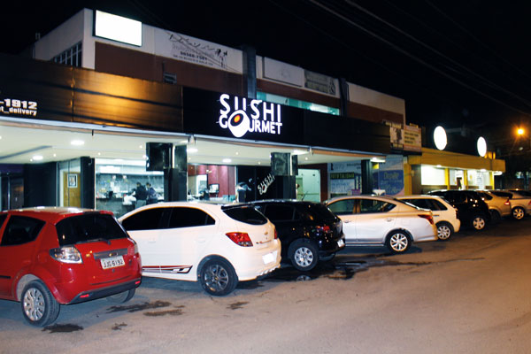
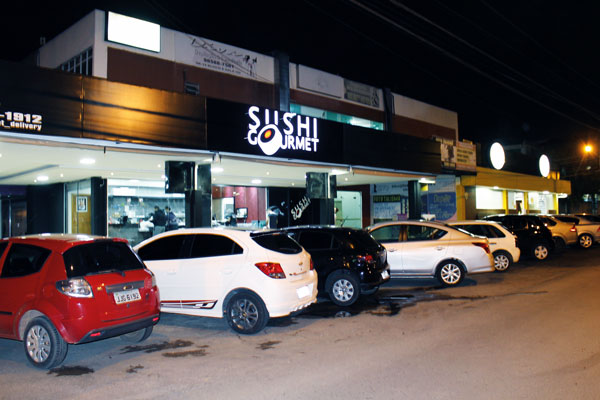

International Cuisines
The Guará administrative region features a wide variety of international restaurants. It is in the commercial areas where you can find a good number of restaurants in the region, ranging from traditional Italian restaurants to exotic options like Chinese, Japanese, and Arabic. The selection is diverse and multicultural, catering to all tastes and preferences. For fans of regional cuisine, there are also options highlighting the rich Brazilian gastronomy, with typical dishes from different states. The same can be said for prices, with restaurants for all budgets, from more sophisticated and gourmet options to more casual and affordable establishments. Some restaurants offer special menus and seasonal promotions, making the experience even more accessible and interesting. In addition to the culinary diversity, many of Guará’s restaurants offer pleasant environments, with thematic decorations and welcoming service. Some places have live music or special events, providing a more complete experience for everyone. More options can be found, and it will be worth exploring the restaurants in Guará and its surroundings, for their diversity and quality. Don’t forget to also visit the local markets and food fairs that frequently take place in the region, offering even more alternatives for those who want to try new flavors.
Asian
Asian cuisine is well represented in Guará with typical dishes from China and Japan.
The Chinese restaurant China Yong Xiang, located in SRIA II (Fashion Polo) - Guará, Brasília - DF, 71070-040,
offers a wide variety of authentic Chinese dishes.
Besides a diverse menu, the restaurant’s atmosphere provides a welcoming experience,
with decor that reflects Chinese culture and attentive service.
If you are looking for sushi or sashimi, there are Japanese culinary options in Guará worth mentioning.
Aki Temakeria, located at Qe 30 Conj Q Lot 2, Guará II Vila Gourmet, Brasília - DF, 71065-170,
is known for its fresh and delicious temakis, prepared with high-quality ingredients.
The relaxed and modern atmosphere makes it an ideal spot for a casual meal, with a variety of sushi and hot dishes.
Another excellent option is Sushi Gourmet, located at QE 15 Q 2 Conj. D 4595 - Guará - Brasília - DF, 71050-161.
This restaurant is famous for its fresh and well-presented sushi, with a selection that includes nigiris, makis, and sashimis.
The elegant decor and personalized service make Sushi Gourmet a popular spot for both casual meals and special occasions.
In addition to the variety of dishes, these restaurants offer an environment that complements the dining experience,
with options for all tastes and budgets. Exploring the Asian food scene in Guará is a great way
to enjoy authentic flavors and experience the richness of Eastern culinary cultures.

 

Italian
Guará also offers options for those who enjoy cuisine from the old continent,
with a highlight on famous Italian cuisine. At Abbraccio restaurant, located at Park Shopping, in SMAS Trecho 1 - Guará, Brasília - DF, 71219-900,
you will find a variety of classic Italian dishes, such as fresh pasta and risottos. The Abbraccio’s atmosphere is elegant and cozy,
with decor that reflects the charm of Italian trattorias, and a service that values quality and customer attention.
For those who love sweets and desserts, the ice cream shop Bacio di Latte, also at Park Shopping, offers an irresistible experience with its artisanal gelatos.
Located in the same mall, Bacio di Latte is known for its selection of intense flavors and creamy textures, prepared with fresh and high-quality ingredients.
The ice cream shop’s environment is modern and sophisticated, providing a pleasant space to enjoy a delicious dessert after shopping or a meal.
These places not only bring a piece of Italy to Guará but also provide a complete dining experience,
with dishes and desserts that delight both in flavor and ambiance.
Visiting Abbraccio and Bacio di Latte is an excellent way to experience the best of Italian cuisine in the heart of Brasília.


Arab
If you crave truly Arab food, Hassan Lanches Iranianos is an excellent choice.
Hassan, an Iranian who has lived in Brazil for over 15 years, started his business specializing in Arab foods
with the intention of sharing the culinary traditions of the Middle East.
Located at QE 30, in Guará 2, his snack bar offers a variety of authentic dishes, prepared with traditional recipes and fresh ingredients.
The atmosphere is informal and welcoming, reflecting Arab hospitality, and Hassan is also known for his friendly and personalized service,
ensuring an authentic and memorable dining experience.

Mexican
The famous and fiery Mexican cuisine is also present in Guará, with Nacho Man, located at Guará II QI 29 CI Cl Guará Shopping, offering various dishes that highlight the rich culture of Mexico. The Mexican restaurant Nacho Man aims to promote Mexican culture to the people of Brasília. With that, the restaurant brings the most authentic flavors of Mexican cuisine. Concern for quality and originality of dishes led the partners to make their own artisanal tortillas. And not only that: today Nacho Man grows exotic Mexican peppers and makes its own sauces. All made with great dedication, seriousness, and love. It’s the kind of thing that makes all the difference in taste, making it a truly unique experience.
Virtual Guided Tour of Nacho Man Restaurant
You can check out a video showing the establishment by clicking the following link: Virtual tour of Nacho Man
Back to the top